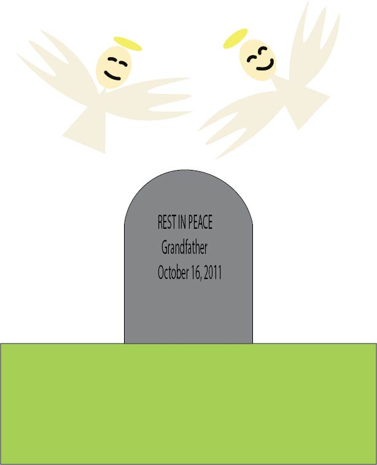

On our Forth day in Mexico, I decided to pay my respects to my grandfather who passed away back in 2011. Me along with my mother and grandmother and aunts went to a flower shop to place them on his grave. I was very emotional about it, because I never met him, nor has he met me. But my mother told me stories about him and he seemed like a nice person, I just wish that I met him once.
